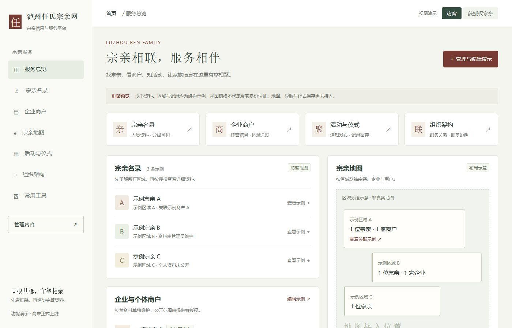
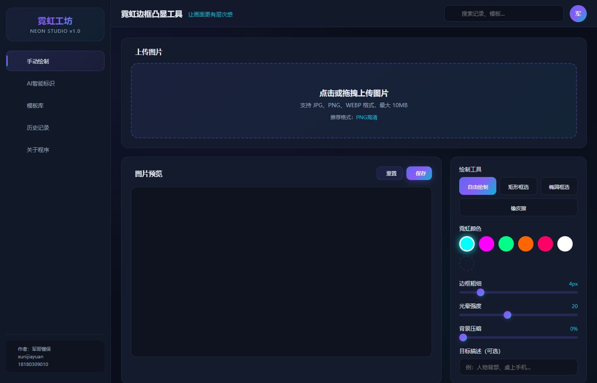

个人应用图鉴与生态导航
让好用的工具，
长成一个生态。
把分散的灵感与应用，连接成自己的数字家园。
从保险服务、AI 创作，到每一天的小事，找到下一件好用的工具。
11大类覆盖工作与生活
92功能组按具体用途归类
218项目目录保留历史版本线索
灵感，在这里发生


每一个工具，都有它的位置
CURATED TOOLS. CONNECTED POSSIBILITIES.
从一个需求出发
SELECTED FOR YOU
先从这些应用认识生态
THE APPLICATION ATLAS
你的应用图鉴92
认识用途，看看界面，再找到合适的版本。
全部应用
暂时没有找到匹配的应用
试试其他关键词，或清除筛选重新浏览。
ONE CONNECTED ECOSYSTEM
在图谱里，找到新的连接
点击一个节点，探索这个领域的应用。
11 个领域 · 92 个功能组 按用途建立的分类关系
BETTER TOGETHER
围绕一个场景，组合你的工具
搭配思路示意，帮助你寻找下一步。
组合关系不代表程序已经互相接通。
VERSION NOTES
认清版本，少一点翻找
把时间、版本号与运行状态放在一起看。
“最近更新”按文件修改时间筛选；最高标注版本与可用状态分别记录。APK 文件名与内置版本的差异，已在详情中注明。